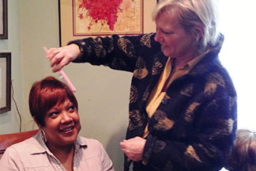

The Cancer Support Center hosts a range of body image related
activities including: wig boutiques, breast prosthetics, LGFB classes
(sponsored by the American Cancer Society), programs to address
incontinence and sexuality, and more. Please review our newsletter to
see what body image programs might be useful to you and register today.
A diagnosis of cancer ultimately involves a multitude of treatment
interventions that can include invasive surgeries, removal of tissue, and
reconstruction. Additionally, radiation and chemotherapies can cause
significant bodily changes such as weight gain/loss, skin discoloration,
and hair loss. It should then not be surprising that these unwanted
changes can result in a fair amount of stress in the individual battling
cancer. In head and neck cancers, for example, as many as 75 percent
of patients have been identified as having significant distress related to
their changing body image (Fubgeret, Yuan, Weston, Nipomnick, & Webber, 2012). In other cancers, such as prostate and breast,
individuals also experience moderate to severe levels of distress that have broadly reaching effects in multiple domains of
functioning (Prezdzeicki, Sherman, Baille, Taylor, Foley, &Stalgis-Bilinski, 2012). Recent literature also suggests that low self-
compassion and negative views of one’s body can correlate very strongly with over low quality of life scores on standardized
measures (Taylor-Ford, Meyerowitz, D’Orazio, Christie, Gross, & Agus, 2013).
For many individuals fighting or recovering from cancer the specific concerns of appearance, sexual functioning, and weight
gain/loss are large hurdles that often must be addressed by support services in order to improve the quality of (Prezdzeicki,
Sherman, Baille, Taylor, Foley, & Stalgis-Bilinski, 2012). The Cancer Support Center not only offers programs to help individuals
psychologically cope with these changes, but also programs that help them address the issues themselves. For instance, The
Cancer Support Center offers free wigs, wraps, hats, and hair pieces to individuals who are suffering from hair loss. For women,
The Center offers prosthetic devices to help alter their outward appearance.
Through the generosity of community partnerships and volunteers, The Center is able to refer men and women to local salons,
barbers, and nail salons that offer them free and discounted style services. We are also a proud partner with one long-standing and
successful program Look Good Feel Better, which offers makeovers and guidance to women who are coping with physical
appearance changes related to cancer survivorship.